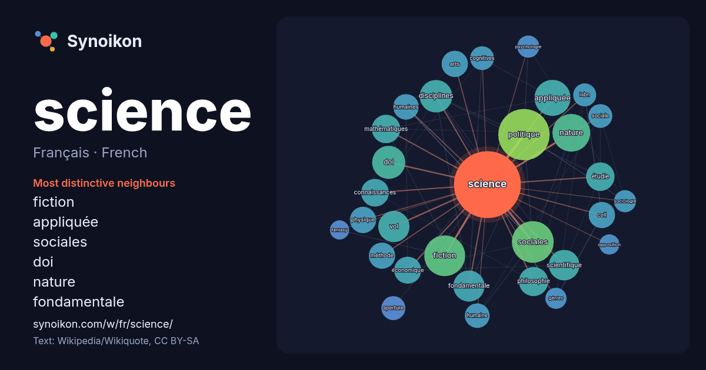

Français · French · popular word
science
“science” · The words found around it in 1152 instances from French Wikipedia, Wikiquote.

Most distinctive neighbours
- fiction 37×
- appliquée 30×
- sociales 28×
- doi 28×
- nature 24×
- fondamentale 23×
- disciplines 22×
- coll 18×
- vol 17×
- politique 17×
- philosophie 17×
- mathématiques 17×
- étudie 16×
- aperture 15×
- cognitives 15×
- scientifique 14×
- connaissances 14×
- isbn 14×
- humaine 13×
- humaines 13×
× = how many times more often than in general French Wikipedia text.
Most frequent neighbours
- politique 65
- sociales 43
- fiction 41
- nature 35
- appliquée 32
- doi 27
- histoire 27
- disciplines 26
- fondamentale 24
- vol 24
- scientifique 23
- philosophie 21
- étudie 20
- mathématiques 20
- connaissances 19
- économique 18
- terme 18
- arts 17
- coll 17
- méthode 17
In context
- voir Science (homonymie). Science Allégorie de la Science par Jules Blanchard, située sur le parvis de l'hôtel de ville de Paris. La science (du latin Wikipedia snippets · Science
- Pour les articles homonymes, voir Science Fiction (homonymie) et SF. La science-fiction est un genre narratif, principalement littéraire (littérature Wikipedia snippets · Science-fiction
- termes, la science politique est dite comme « la science du gouvernement des États ». La science politique est l'une des disciplines des sciences sociales Wikipedia snippets · Science politique
- par des sources secondaires. Pour la science modifier - modifier le code - voir Wikidata (aide) Pour la science est un magazine mensuel de vulgarisation Wikipedia snippets · Pour la science
- « L'opposition entre sciences humaines et sociales et sciences du monde naturel a un fondement épistémologique mais l'opposition science dure/science molle, dans Wikipedia snippets · Sciences dures et sciences molles
- autres projets Wikimedia : Science de la nature, sur Wikimedia Commons science de la nature, sur le Wiktionnaire Science de la nature, sur Wikisource Wikipedia snippets · Science de la nature
- monde et science des sciences. Pour lui, la science comprend trois grands domaines : la science théorique, la science pratique et la science productive Wikipedia snippets · Aristote
- République. D'après le classement QS par discipline, Sciences Po figure au 2e rang mondial en science politique et en relations internationales en 2024, Wikipedia snippets · Institut d'études politiques de Paris
More French words
- art
- automne
- carte
- chanson
- chat
- chemin
- cheval
- chien
- climat
- cloche
- cœur
- dieu
- désert
- eau
- famille
- forêt
- histoire
- hiver
- horloge
- jardin
- langue
- miel
- miroir
- monnaie
- montagne
- mort
- mère
- nature
- nourriture
- ombre
- pain
- pluie
- pont
- pouvoir
- printemps
- santé
- sel
- silence
- temps
- tempête
- thé
- train
- travail
- trésor
- vie
- ville
- vérité
- étoile
- île
Precomputed on 2026-10-09 with default settings (±5 words, medium corpus). The interactive map can refresh it with live data.